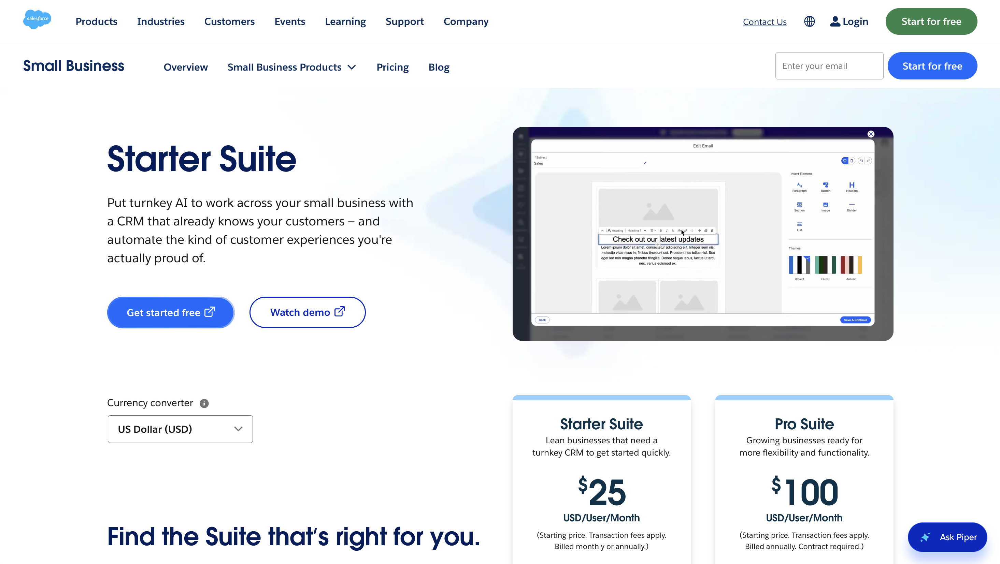

Agentforce
Agentforce launch and web messaging. Add a short note here on the copy, CTA, or product narrative you helped shape.
Salesforce · Messaging + GTM
I worked across web copy, launch content, product walkthroughs, campaign briefs, and sales enablement for Agentforce and Starter Suite. Much of the work centered on turning technical capabilities into language customers and internal teams could use quickly.
Agentforce
Agentforce launch and web messaging. Add a short note here on the copy, CTA, or product narrative you helped shape.
Starter Suite

Starter Suite web messaging. Add a short note here on the headlines, body copy, CTAs, or positioning you directly contributed to.
01 · the challenge
Agentforce and Starter Suite came with different audiences and use cases, but both needed clear stories around what the product did, why it mattered, and how customers could use it.
I worked in the layer between product priorities and customer-facing communication, helping shape how features showed up across web, social, launch, and enablement materials.
02 · my role
I wrote and refined customer-facing web copy, creator scripts, product walkthroughs, launch recaps, campaign briefs, and sales materials. I worked with Product Marketing, Growth, Web, Legal, Brand, Localization, Paid Media, and Sales to keep messaging accurate and consistent across channels.
03 · Starter Suite
For Starter Suite, I focused on making product value easier to understand quickly through headlines, body copy, CTAs, and supporting messaging tied to real SMB use cases.
04 · Agentforce
Agentforce required a different kind of translation. I supported messaging that connected AI capabilities to practical business outcomes, helping make a fast-moving technical category feel more useful and specific to customers.
05 · launch enablement
I also built launch recaps, product walkthroughs, campaign briefs, and sales-facing materials that gave teams clearer guidance around value propositions, customer use cases, and campaign priorities.
Those materials helped connect the customer story to day-to-day execution across Sales, Marketing, and partner teams.
06 · what I learned
This work made me more interested in the communications side of product marketing. How a product is explained influences whether customers understand it, whether teams can sell it, and whether people can picture themselves using it.